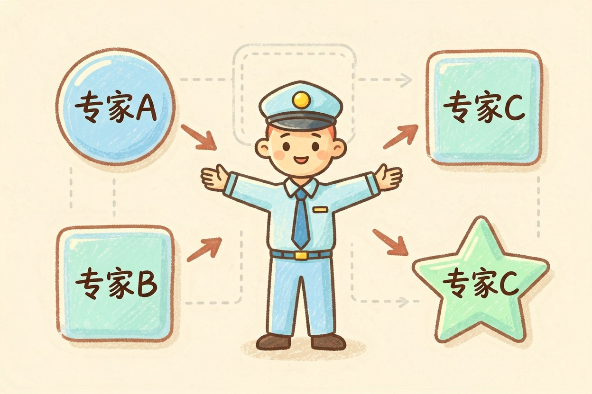
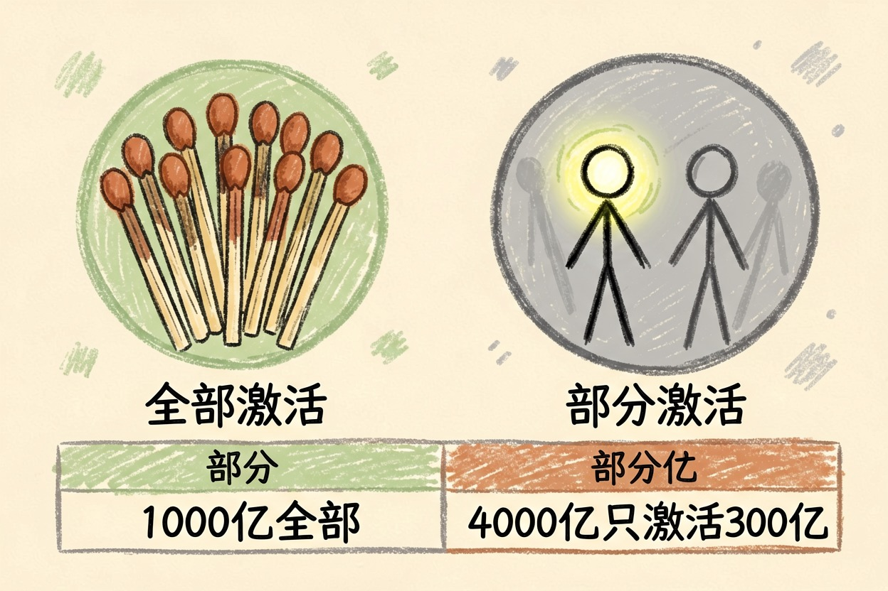
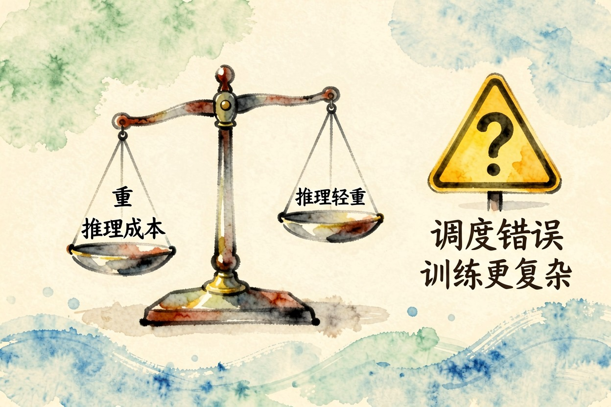
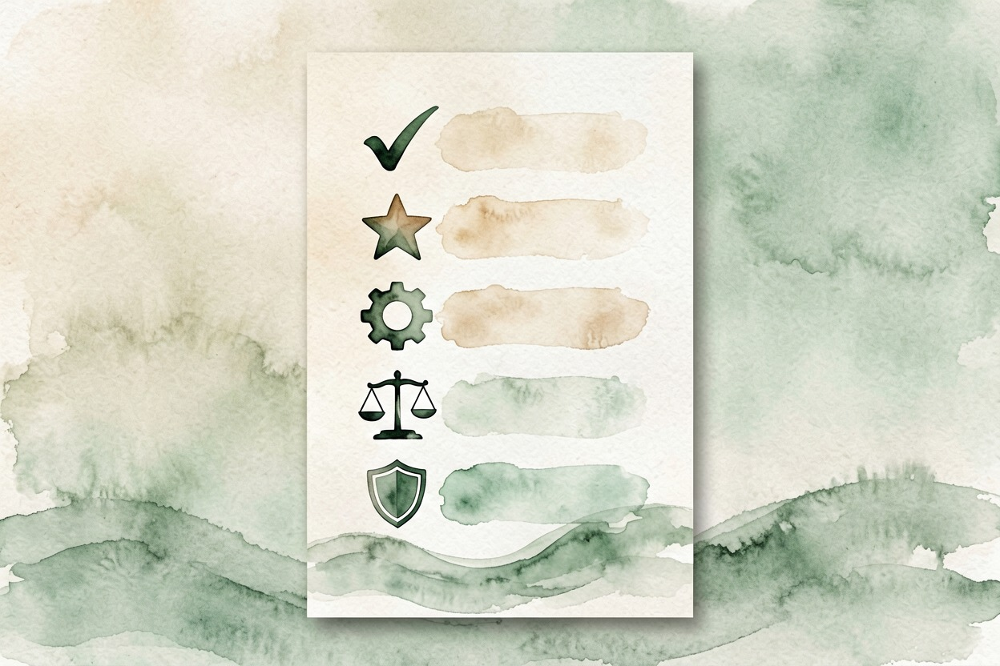

MoE 是什么：大模型里的专家分工法 — Learntide
与其养一个什么都会却很费电的胖模型，不如养一群各管一摊的专家，用谁点谁。
moe架构是什么：让专家分工干活

moe架构是什么？全称叫「混合专家」。做法是把一个大模型内部拆成许多个小网络，每个小网络叫一位「专家」。前面还站着一个调度器，负责判断当前这段话该请哪几位专家出场。绝大多数专家，在大多数时候都闲着。
所以它做到了一件看起来矛盾的事：总参数量堆得很大，每次真正参与计算的却只有一小块。
它到底怎么省下算力

先看普通的稠密模型。它每吐一个字，全部参数都要过一遍，像全公司一起加班，不管这活跟谁有关系。
MoE 换了个思路。调度器扫一眼当前输入，只点名两三位相关的专家，其余的继续休息。
稠密模型：1000 亿参数，每次全部激活 → 稳，但每个字都贵
MoE 模型：4000 亿参数，每次只激活 300 亿 → 容量更大，单次更便宜同样的推理预算，能撑起大得多的模型容量。这就是它受欢迎的核心原因。想弄明白这些参数，可以先看 大模型是什么。
打个比方。稠密模型像一家所有人开大会的公司，每件小事全员到场。MoE 更像有分工的公司，前台先分诊，只叫相关部门。人数很多，每次动的是少数。
为什么这两年突然火起来

原因很现实：推理成本。训练贵是一次性的，推理贵是天天要付的。用户每问一句，厂商就按 token 是什么意思 结算一次电费和算力。
调用量涨到一定规模，单次成本降三成，一年省下的就是真金白银。
同时，能力竞赛又逼着大家把参数往上堆。既要容量，又要便宜，MoE 差不多是眼下最现成的答案。很多新模型的价格能一路往下走，跟这套结构关系不小。
对普通用户来说，这件事的体感很直接。同样的钱能问更多问题，免费额度也更大方一些。
它的代价在哪里
第一是调度会出错。专家点错了，回答就发飘。同一类问题，表现可能忽好忽坏。
第二是训练更折腾。得想办法让每位专家都被用上。不然几位专家累死、其他长期闲置，实际容量就白白浪费。这一步的调校难度比稠密模型高不少，后续做 微调是什么 那类打磨也更讲究。
第三是部署门槛不低。参数总量摆在那里，显存还是得装得下。省的是计算量，不是存储。个人想在本地跑一个大号 MoE，依然不轻松。
别被参数量吓到
还有个常见误解：以为专家各管一个学科，一位懂数学，一位懂法律。实际并非这么分的。调度器学到的划分很抽象，人看不懂，也对不上任何学科名字。
看到「万亿参数」四个字，先别急着换算成能力。这个数字说的是模型有多大，跟它每次用了多少是两回事。稠密的一千亿和 MoE 的一万亿，实际计算开销可能差不多。
厂商愿意公布总参数，是因为这个数好看。你真正该关心的是激活参数、上下文长度和实际表现。选模型时别只盯着一个数，关键还是看 moe架构是什么带来的激活规模，以及它在你的任务上答得准不准。

本文信息核对于 2026-08-08。AI 产品的价格、免费额度与功能变动频繁，实际以各工具官网当前说明为准。